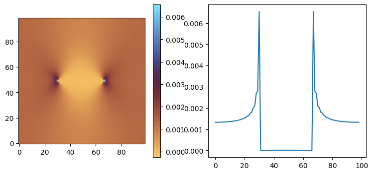
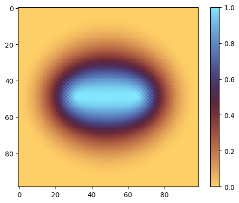
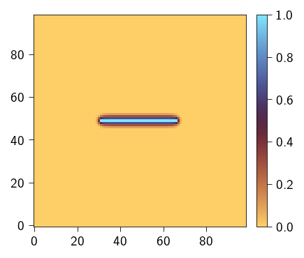
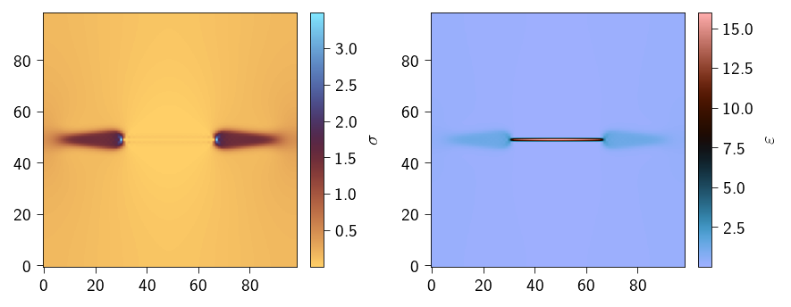

phasefield fracture 2D
import jax
jax.config.update("jax_enable_x64", True) # use double-precision
jax.config.update("jax_persistent_cache_min_compile_time_secs", 0)
jax.config.update("jax_platforms", "cpu")
import jax.numpy as jnp
import numpy as np
import equinox as eqx
import matplotlib.pyplot as plt
from skimage.morphology import footprint_rectangle
from xpektra import SpectralSpace, make_field
from xpektra.transform import FFTTransform
from xpektra.spectral_operator import SpectralOperator
from xpektra.scheme import FourierScheme, RotatedDifference
from xpektra.projection_operator import GalerkinProjection
from xpektra.solvers.nonlinear import newton_krylov_solver, conjugate_gradient_while
N = 99
ndim = 2
length = 10
dx = length / N
ell = 0.2
def create_structure(N):
Hmid = int(N / 2)
Lmid = int(N / 2)
r = int(N / 10)
structure = np.zeros((N, N))
structure[Hmid : Hmid + 1, Lmid - 2 * r : Lmid + 2 * r] += footprint_rectangle(
(1, 4 * r)
)
return structure
structure = create_structure(N)
plt.figure(figsize=(4, 4))
cb = plt.imshow(structure, cmap="gray")
plt.colorbar(cb)
plt.show()

Spatial and FFT operators that we need for solving of frature problem.
fft_transform = FFTTransform(ndim)
space = SpectralSpace(shape=(N, N), lengths=(length, length), transform=fft_transform)
diff_scheme = RotatedDifference(space=space)
op = SpectralOperator(scheme=diff_scheme, space=space)
The total energy of the material undergoing fracture can be given as
Defining the elastic strain energy with degradation of only positive energy part, we use the volumetric-deviatoric split to define the positive and negative part.
Elasticity subproblem¤
Now, we divided the problem into two subproblems: elastic and fracture. taking the first variation of functional \(\psi\) with respect to \(\varepsilon\) and \(\alpha\). The first variation of functional \(F[u]\) is defined as :
\begin{align} \delta F[u] &= \lim_{\epsilon\to 0} \dfrac{F[u+\epsilon\delta u] - F[u]}{\epsilon} = \lim_{\epsilon\to0} \dfrac{\text{d}}{\text{d}\epsilon} I[u+\epsilon\delta u] \end{align} The above is also called Gateaux derivative.
For functional form that may involve \(u\) as well as its partial derivatives, we can define the first variation as follows:
The first variation of \(\psi\) with respect to \(\varepsilon\)
For this subproblem,we solve the weak form given as
and we use the Fourier-Galerkin method for that.
For FFT scheme, we define the above strain expression for each grid point (\(x,y\))
E_solid = 1.
E_void = 1e-3
nu = 0.3
Gc = 1e-2
lambda_solid = E_solid * nu / ((1 + nu) * (1 - 2 * nu))
lambda_void = E_void * nu / ((1 + nu) * (1 - 2 * nu))
mu_solid = E_solid / (2 * (1 + nu))
mu_void = E_void / (2 * (1 + nu))
lambda_field = lambda_solid * (1-structure) + lambda_void * structure
mu_field = mu_solid * (1-structure) + mu_void * structure
bulk_field = lambda_field + 2 * mu_field / 3
elasticity_dofs_shape = make_field(dim=ndim, shape=(N, N), rank=2).shape
fracture_dofs_shape = make_field(dim=ndim, shape=(N, N), rank=0).shape
i = jnp.eye(ndim)
I = make_field(dim=ndim, shape=(N, N), rank=2) + i
cw = 2 / 3.0
kappa = 1e-1
@jax.jit
def g(alpha):
return (1 - alpha) ** 2 + kappa
@jax.jit
def w(alpha):
return alpha # 0.5*alpha**2 # alpha
@jax.jit
def no_split(eps):
eps_sym = 0.5 * (eps + op.trans(eps))
energy = 0.5 * jnp.multiply(lambda_field, op.trace(eps_sym) ** 2) + jnp.multiply(
mu_field, op.trace(op.dot(eps_sym, eps_sym))
)
return energy
@jax.jit
def vol_dev_split(eps):
def macluay_plus(A):
return 0.5 * (A + jnp.abs(A))
def macluay_minus(A):
return 0.5 * (A - jnp.abs(A))
esp_plus = macluay_plus(op.trace(eps))
esp_minus = macluay_minus(op.trace(eps))
eps_dev = (
eps - jnp.einsum("ij, ...->...ij", jnp.eye(ndim), op.trace(eps)) / 3
) # deviatoric strain
strain_energy_plus = 0.5 * jnp.multiply(
bulk_field, jnp.multiply(esp_plus, esp_plus)
) + jnp.multiply(mu_field, op.ddot(eps_dev, eps_dev))
strain_energy_minus = 0.5 * jnp.multiply(
mu_field, jnp.multiply(esp_minus, esp_minus)
)
return strain_energy_plus, strain_energy_minus
@jax.jit
def spectral_split(eps):
def macluay_plus(A):
return 0.5 * (A + jnp.abs(A))
def macluay_minus(A):
return 0.5 * (A - jnp.abs(A))
eps_eg = jnp.linalg.eig(eps)
@jax.jit
def strain_energy(eps_flat, alpha_flat):
eps = eps_flat.reshape(elasticity_dofs_shape)
alpha = alpha_flat.reshape(fracture_dofs_shape)
eps_sym = 0.5 * (eps + op.trans(eps))
strain_energy_plus, strain_energy_minus = vol_dev_split(eps_sym)
energy = g(alpha) * strain_energy_plus + strain_energy_minus
# strain_energy = no_split(eps_sym)
# energy = g(alpha)*strain_energy
return energy.sum()
compute_stress = jax.jacrev(strain_energy)
Ghat = GalerkinProjection(scheme=diff_scheme)
from jax import Array
class ElasticityResidual(eqx.Module):
"""A callable module that computes the residual vector."""
dofs_shape: tuple = eqx.field(static=True)
# We can even pre-define the stress function if it's always the same
# For this example, we'll keep your original `compute_stress` function
# available in the global scope.
@eqx.filter_jit
def __call__(self, eps_flat: Array, alpha_flat: Array) -> Array:
"""
This makes instances of this class behave like a function.
It takes only the flattened vector of unknowns, as required by the solver.
"""
eps_flat = eps_flat.reshape(-1)
alpha_flat = alpha_flat.reshape(-1)
sigma = compute_stress(eps_flat, alpha_flat)
residual_field = op.inverse(
Ghat.project(op.forward(sigma.reshape(self.dofs_shape)))
)
return jnp.real(residual_field).reshape(-1)
class ElasticityJacobian(eqx.Module):
"""A callable module that represents the Jacobian operator (tangent)."""
dofs_shape: tuple = eqx.field(static=True)
@eqx.filter_jit
def __call__(self, deps_flat: Array, alpha_flat: Array) -> Array:
"""
The Jacobian is a linear operator, so its __call__ method
represents the Jacobian-vector product.
"""
deps_flat = deps_flat.reshape(-1)
alpha_flat = alpha_flat.reshape(-1)
dsigma = compute_stress(deps_flat, alpha_flat)
jvp_field = op.inverse(
Ghat.project(op.forward(dsigma.reshape(self.dofs_shape)))
)
return jnp.real(jvp_field).reshape(-1)
alpha0 = structure
applied_strains = jnp.diff(jnp.linspace(0, 1e-3, num=2))
deps = make_field(dim=ndim, shape=structure.shape, rank=2)
eps = make_field(dim=ndim, shape=structure.shape, rank=2)
residual_fn = ElasticityResidual(dofs_shape=eps.shape)
jacobian_fn = ElasticityJacobian(dofs_shape=eps.shape)
for inc, deps_avg in enumerate(applied_strains):
# solving for elasticity
deps[:, :, 0, 0] = deps_avg
b = -jacobian_fn(deps.reshape(-1), alpha_flat=alpha0.reshape(-1))
eps = eps + deps
residual_partial = eqx.Partial(residual_fn, alpha_flat=alpha0.reshape(-1))
jacobian_partial = eqx.Partial(jacobian_fn, alpha_flat=alpha0.reshape(-1))
final_state = newton_krylov_solver(
state=(deps, b, eps),
gradient=residual_partial,
jacobian=jacobian_partial,
tol=1e-8,
max_iter=20,
krylov_solver=conjugate_gradient_while,
krylov_tol=1e-8,
krylov_max_iter=50,
)
eps = final_state[2]
eps = final_state[2].reshape(elasticity_dofs_shape)
sig = compute_stress(final_state[2], alpha_flat=alpha0.reshape(-1)).reshape(elasticity_dofs_shape)
CG error = 0.00006655978748
CG error = 0.00042089973622
CG error = 0.00007554364467
CG error = 0.00001522675664
CG error = 0.00000352423017
CG error = 0.00000077934000
CG error = 0.00000017491980
CG error = 0.00000003847124
CG error = 0.00000000975842
CG error = 0.00000000225270
CG error = 0.00000000055261
CG error = 0.00000000012713
CG error = 0.00000000003065
CG error = 0.00000000000702
CG error = 0.00000000000166
CG error = 0.00000000000038
CG error = 0.00000000000009
CG error = 0.00000000000002
CG error = 0.00000000000000
CG error = 0.00000000000000
Didnot converge, Residual value : 2.3441717668617714e-08
fig, (ax1, ax2) = plt.subplots(1, 2, figsize=(9, 4))
cb = ax1.imshow(sig.at[:, :, 0, 0].get(), cmap="managua", origin='lower')
fig.colorbar(cb, ax=ax1)
ax2.plot(sig.at[:, :, 0, 0].get()[N//2, :])
plt.show()

op.grad(alpha0).shape
(99, 99, 2)
phasefield subproblem¤
The first variation of \(\psi\) with respect to \(\alpha\)
We can apply intergation by parts to the last term
and since \(\delta \alpha=0\) at the boundaries we can say that the first variation of \(\psi\) w.r.t \(\alpha\)
For this subproblem we chose to solve the strong form rather than the above weak form. The strong form is given from the above weak form. Since the above equation holds for any \(\delta \alpha\) therefore, we can say
We use AT1 phasefield formulation for the phasefield degradation function.
@jax.jit
def g_sum(alpha):
return g(alpha).sum()
@jax.jit
def w_sum(alpha):
return w(alpha).sum()
dgdalpha = jax.jit(jax.grad(g_sum))
dwdalpha = jax.jit(jax.grad(w_sum))
@jax.jit
def fracture_energy(alpha_flat, eps_flat):
eps = eps_flat.reshape(elasticity_dofs_shape)
alpha = alpha_flat.reshape(fracture_dofs_shape)
eps_sym = 0.5 * (eps + op.trans(eps))
strain_energy_plus, _ = vol_dev_split(eps_sym)
elastic_energy = g(alpha) * strain_energy_plus
energy = (
elastic_energy
+ jnp.multiply(Gc, w(alpha)) / cw
+ jnp.multiply(
Gc,
ell * ell * jnp.einsum("...ij,...ij->...", op.grad(alpha), op.grad(alpha)),
)
/ cw
)
# strain_energy = no_split(eps_sym)
# energy = g(alpha)*strain_energy
return energy.sum()
@jax.jit
def fracture_strong_form(alpha, epsilon):
alpha = alpha.reshape((N, N))
eps_sym = 0.5 * (epsilon + op.trans(epsilon))
strain_energy_plus, _ = vol_dev_split(eps_sym)
res = (
jnp.multiply(strain_energy_plus, dgdalpha(alpha))
+ jnp.multiply(Gc, dwdalpha(alpha)) / ell / cw
- 2 * ell * jnp.multiply(Gc, op.laplacian(alpha)) / cw
)
return res.reshape(-1)
The phasefield subproblem is a root-finding problem under cosntraints and is given as
Find $\alpha $ for a given \(\varepsilon\) such that $$ \psi_{e}^{+}\dfrac{\partial g(\alpha)}{\partial \alpha} + \dfrac{G_{c}}{c_w}\dfrac{1}{l}\dfrac{\partial w(\alpha)}{\partial \alpha} - 2\ell\dfrac{G_{c}}{c_w}\nabla \cdot{} \nabla \alpha = 0 $$
and the constraint is $\alpha_\textsf{prev} < \alpha < 1 $ for irreversibility.
fracture_energy(alpha0.reshape(-1), eps.reshape(-1))
Array(419.71454456, dtype=float64)
from scipy.optimize import minimize, Bounds
@eqx.filter_jit
def least_squares_objective(alpha, F_func):
"""
Computes the scalar objective: 1/2 * ||F(alpha)||^2
Args:
alpha: The input vector
F_func: Your original function that returns the residual vector
"""
residual_vector = F_func(alpha)
return 0.5 * jnp.dot(residual_vector, residual_vector)
F = eqx.Partial(fracture_strong_form, epsilon=eps)
least_squares_objective_partial = eqx.Partial(least_squares_objective, F_func=F)
fracture_energy_partial = eqx.Partial(fracture_energy, eps_flat=eps.reshape(-1))
from scipy.optimize import minimize, Bounds
# 2. Create the combined value-and-gradient function
# This is the key to connecting JAX to SciPy.
#
# NOTE: F_func is passed as a static argument because
# it's a Python function, not a JAX array.
value_and_grad_jax = jax.jit(jax.value_and_grad(least_squares_objective_partial))
# 3. Create a wrapper for SciPy
# SciPy solvers expect functions that:
# - Accept a 1D NumPy float64 array.
# - Return NumPy float64s.
# This wrapper handles the type conversions.
def scipy_objective_and_grad(alpha_np):
"""
Wrapper for SciPy to call our JIT-compiled JAX function.
"""
# Convert NumPy input to JAX array
alpha_jax = jnp.asarray(alpha_np)
# Call the JAX function
value_jax, grad_jax = value_and_grad_jax(alpha_jax)
#value_jax = least_squares_objective_partial(alpha_jax)
#grad_jax = F(alpha_jax)
# Convert JAX outputs back to NumPy float64
value_np = np.float64(value_jax)
grad_np = np.array(grad_jax, dtype=np.float64)
return value_np, grad_np
# SciPy L-BFGS-B works best with float64
# Ensure your initial guess is a flat NumPy array
alpha0_np = np.array(alpha0, dtype=np.float64).flatten()
# Create the SciPy Bounds object
scipy_bounds = Bounds(alpha0.reshape(-1), jnp.ones_like(alpha0).reshape(-1))
print("Starting scipy.optimize.minimize (L-BFGS-B) with JAX gradient...")
# Run the solver!
# - fun: The wrapper function
# - x0: Initial guess
# - args: Extra arguments to pass to our wrapper (F_func)
# - method: The solver that worked for you
# - jac=True: Tells SciPy that 'fun' returns (value, gradient)
# - bounds: The constraints
# - options: Set 'disp' to True for verbose output
result = minimize(
fun=scipy_objective_and_grad,
x0=alpha0_np,
method="L-BFGS-B",
jac=True,
bounds=scipy_bounds,
options={"disp": True, "maxiter": 500},
)
# --- 5. Check the results ---
print("\n--- SciPy Results ---")
print(f"Success: {result.success}")
print(f"Message: {result.message}")
print(f"Final objective (1/2 ||F||^2): {result.fun}")
final_F_norm = jnp.sqrt(2 * result.fun)
print(f"Final residual norm ||F||: {final_F_norm}")
print(F(result.x).reshape((N, N)))
# The final solution vector
final_alpha = result.x
Starting scipy.optimize.minimize (L-BFGS-B) with JAX gradient...
/tmp/ipykernel_5369/2471087639.py:53: DeprecationWarning: scipy.optimize: The `disp` and `iprint` options of the L-BFGS-B solver are deprecated and will be removed in SciPy 1.18.0.
result = minimize(
--- SciPy Results ---
Success: True
Message: CONVERGENCE: RELATIVE REDUCTION OF F <= FACTR*EPSMCH
Final objective (1/2 ||F||^2): 27.516645377736474
Final residual norm ||F||: 7.41844260983887
[[0.0748839 0.07488408 0.07488441 ... 0.07488408 0.0748839 0.07488383]
[0.07488384 0.07488405 0.07488435 ... 0.07488405 0.07488384 0.0748838 ]
[0.07488377 0.07488393 0.07488428 ... 0.07488393 0.07488377 0.07488368]
...
[0.07488377 0.07488393 0.07488428 ... 0.07488393 0.07488377 0.07488368]
[0.07488384 0.07488405 0.07488435 ... 0.07488405 0.07488384 0.0748838 ]
[0.0748839 0.07488408 0.07488441 ... 0.07488408 0.0748839 0.07488383]]
plt.imshow(final_alpha.reshape((N, N)), cmap="managua")
plt.colorbar()
plt.show()

using jaxopt¤
from jaxopt import ProjectedGradient
from jaxopt import ScipyBoundedMinimize # <-- Alternative, see below
from jaxopt.projection import projection_box
# We need a new function that returns a scalar to be *minimized*.
# The standard choice is the sum of squares of the residual.
@eqx.filter_jit
def least_squares_objective(alpha, F_func):
"""
Computes the scalar objective: 1/2 * ||F(alpha)||^2
Args:
alpha: The input vector
F_func: Your original function that returns the residual vector
"""
residual_vector = F_func(alpha)
return 0.5 * jnp.dot(residual_vector, residual_vector)
# --- Create the bounds tuple ---
bounds = (structure.reshape(-1), jnp.ones(N*N))
least_squares_objective_partial = eqx.Partial(least_squares_objective, F_func=F)
lbfgsb = ScipyBoundedMinimize(
fun=least_squares_objective_partial,
method="L-BFGS-B",
maxiter=500,
tol=1e-6,
options={'disp': True} # Show SciPy's output
)
# 'sol' will contain the final 'alpha' and solver state
sol_scipy, state_scipy = lbfgsb.run(
init_params=alpha0.reshape(-1),
bounds=bounds,
)
print(state_scipy.success)
True
plt.figure(figsize=(4, 4))
cb = plt.imshow(sol_scipy.reshape((N, N)), cmap="managua")
plt.colorbar(cb)
plt.show()

import jax.scipy.sparse.linalg as jsl
def projected_gauss_newton(
F, # function F(alpha) -> residual vector (jax array)
alpha0, # initial guess (full-sized vector)
lb, # lower bound (full-sized vector)
ub, # upper bound (full-sized vector)
max_iter=200,
tol=1e-10,
solver_tol=1e-8, # Tolerance for the CG solver
solver_maxiter=None # Max iterations for the CG solver
):
"""
Solve F(alpha) = 0 subject to lb <= alpha <= ub using a
projected Gauss-Newton method (matching PETSc's KSP 'cg').
This solves the normal equations (J^T J) * delta = -J^T F
in the projected free space.
"""
if solver_maxiter is None:
solver_maxiter = alpha0.size
# Jacobian-vector product: Jv(v) = J(alpha) @ v
def Jv_full(v, alpha):
return jax.jvp(F, (alpha,), (v,))[1]
# Vector-Jacobian product (transpose): vJ(v) = v^T @ J(alpha)
def vJ_full(v, alpha):
# jax.vjp returns (primals_out, vjp_fun)
_, vjp_fun = jax.vjp(F, alpha)
# vjp_fun(v) returns a tuple of gradients; we want the one for alpha
return vjp_fun(v)[0]
alpha = alpha0
for it in range(max_iter):
res = F(alpha)
fnorm = jnp.linalg.norm(res)
print(f"Iter {it}, ||F||={fnorm}")
if fnorm < tol:
return alpha
# Identify active set
eps_proj = 1e-12
at_lb = (alpha <= lb + eps_proj)
at_ub = (alpha >= ub - eps_proj)
active = at_lb | at_ub
n_free = alpha.size - int(jnp.sum(active))
if n_free == 0:
print("All variables are active; no further progress can be made.")
return alpha
# --- Define the full-space projected Gauss-Newton operator ---
# This operator A(v) computes (P_F @ J^T @ J @ P_F) @ v
def projected_JTJ_v(v):
# 1. Project input: v_in = P_F @ v
v_in = jnp.where(active, 0.0, v)
# 2. Apply J: Jv = J @ v_in
Jv = Jv_full(v_in, alpha)
# 3. Apply J^T: JTJv = J^T @ Jv
# We don't need to project Jv because J^T will only
# produce output in the free-space anyway (conceptually).
JTJv = vJ_full(Jv, alpha)
# 4. Project output: v_out = P_F @ JTJv
v_out = jnp.where(active, 0.0, JTJv)
return v_out
# --- Define the full-space projected right-hand side ---
# This is b = -P_F @ (J^T F)
JT_F = vJ_full(res, alpha)
r_full = jnp.where(active, 0.0, -JT_F)
# --- Solve the (symmetric) projected system using CG ---
delta, exit_code = jsl.cg(
projected_JTJ_v,
r_full,
tol=solver_tol,
maxiter=solver_maxiter
)
if exit_code != 0:
print(f"Warning: CG solver did not converge. Exit code: {exit_code}")
# --- TODO: ADD A LINE SEARCH HERE ---
step = 1.0
fnorm_old_sq = fnorm**2
for _ in range(50): # Max 10 line search steps
alpha_new = jnp.clip(alpha + step * delta, lb, ub)
res_new = F(alpha_new)
fnorm_new_sq = jnp.linalg.norm(res_new)**2
# Armijo condition (sufficient decrease)
if fnorm_new_sq < fnorm_old_sq: # (simplified version)
alpha = alpha_new
break
step /= 2.0 # Decrease step size
else:
# Line search failed
print("Line search failed to find a better point.")
return alpha
raise RuntimeError("Projected Gauss-Newton failed to converge within max_iter")
def projected_levenberg_marquardt(
F, # function F(alpha) -> residual vector (jax array)
alpha0, # initial guess (full-sized vector)
lb, # lower bound (full-sized vector)
ub, # upper bound (full-sized vector)
max_iter=200,
tol=1e-10,
solver_tol=1e-8, # Tolerance for the CG solver
solver_maxiter=None,
damping=1e-4 # Damping parameter (lambda)
):
"""
Solve F(alpha) = 0 subject to lb <= alpha <= ub using a
projected Levenberg-Marquardt method.
This solves the damped normal equations
(J^T J + damping*I) * delta = -J^T F
in the projected free space.
"""
if solver_maxiter is None:
solver_maxiter = alpha0.size
# Jacobian-vector product: Jv(v) = J(alpha) @ v
def Jv_full(v, alpha):
return jax.jvp(F, (alpha,), (v,))[1]
# Vector-Jacobian product (transpose): vJ(v) = v^T @ J(alpha)
def vJ_full(v, alpha):
_, vjp_fun = jax.vjp(F, alpha)
return vjp_fun(v)[0]
alpha = alpha0
for it in range(max_iter):
res = F(alpha)
fnorm = jnp.linalg.norm(res)
print(f"Iter {it}, ||F||={fnorm}")
if fnorm < tol:
return alpha
# Identify active set
eps_proj = 1e-12
at_lb = (alpha <= lb + eps_proj)
at_ub = (alpha >= ub - eps_proj)
active = at_lb | at_ub
n_free = alpha.size - int(jnp.sum(active))
if n_free == 0:
print("All variables are active; no further progress can be made.")
return alpha
# --- Define the full-space projected Levenberg-Marquardt operator ---
# This operator A(v) computes (P_F @ J^T @ J @ P_F + damping * P_F) @ v
def projected_LM_v(v):
# 1. Project input: v_in = P_F @ v
v_in = jnp.where(active, 0.0, v)
# 2. Apply J: Jv = J @ v_in
Jv = Jv_full(v_in, alpha)
# 3. Apply J^T: JTJv = J^T @ Jv
JTJv = vJ_full(Jv, alpha)
# 4. Project output and add damping term
# v_out = (P_F @ JTJv) + (damping * v_in)
v_out_jtj = jnp.where(active, 0.0, JTJv)
v_out = v_out_jtj + damping * v_in
return v_out
# --- Define the full-space projected right-hand side ---
# This is b = -P_F @ (J^T F)
JT_F = vJ_full(res, alpha)
r_full = jnp.where(active, 0.0, -JT_F)
# --- Solve the (damped, symmetric) projected system using CG ---
delta, exit_code = jsl.cg(
projected_LM_v,
r_full,
tol=solver_tol,
maxiter=solver_maxiter
)
if exit_code != 0:
print(f"Warning: CG solver did not converge. Exit code: {exit_code}")
# --- Simple Backtracking Line Search ---
step = 1.0
fnorm_old_sq = fnorm**2
# We need a JAX-compatible loop for the line search
# to work inside a @jit. Using lax.fori_loop.
# This is more complex, but a simple python loop is fine if not jitting.
# --- Python-based Line Search (simple, but not JIT-compatible) ---
alpha_new = alpha # In case line search fails
for _ in range(10): # Max 10 line search steps
alpha_test = jnp.clip(alpha + step * delta, lb, ub)
res_new = F(alpha_test)
fnorm_new_sq = jnp.linalg.norm(res_new)**2
# Simple decrease condition
if fnorm_new_sq < fnorm_old_sq:
alpha_new = alpha_test
break # Found a good step
step /= 2.0 # Decrease step size
else:
# Line search failed to find a better point
print("Line search failed; stopping.")
return alpha
alpha = alpha_new
raise RuntimeError("Levenberg-Marquardt failed to converge within max_iter")
alpha_new = projected_levenberg_marquardt(
F=F,
alpha0= (alpha0.reshape(-1) + 1)/2,
lb=alpha0.reshape(-1),
ub=jnp.ones_like(alpha0).reshape(-1),
max_iter=50,
tol=1e-6,
damping=1e-6
)
Iter 0, ||F||=8.576612912588672
Warning: CG solver did not converge. Exit code: None
Iter 1, ||F||=7.440102668608955
Warning: CG solver did not converge. Exit code: None
Iter 2, ||F||=7.426486839017538
Warning: CG solver did not converge. Exit code: None
Iter 3, ||F||=7.4264868383189215
Warning: CG solver did not converge. Exit code: None
Line search failed; stopping.
plt.imshow(alpha_new.reshape((N, N)), cmap="managua")
plt.colorbar()
plt.show()

class FractureProblem:
def __init__(self, epsilon, N):
self.epsilon = epsilon
self.N = N
self.compute =eqx.Partial(fracture_strong_form, epsilon=epsilon)
#self.jac = partial(dFdalpha, epsilon=epsilon)
def function(self, snes, X, F):
x = jnp.array(X.getArray())
f = self.compute(x)
F[:] = f
# for the case when we need to pass jacobian as well to petsc solver
dFdalpha = jax.jacfwd(fracture_strong_form)
imshow(return_val=False)(lambda x :x)(strain_energy_plus)

jax.__version__
'0.4.30'
# register the function in charge of
# computing the nonlinear residual
frac = FractureProblem(eps, N)
snes = PETSc.SNES().create(comm=PETSc.COMM_SELF)
f = PETSc.Vec().createSeq(N * N)
snes.setFunction(frac.function, f)
alpha_lb = f.duplicate()
alpha_ub = f.duplicate()
alpha_lb.setArray(structure.reshape(-1))
alpha_ub.set(1)
snes.setUseMF(True)
snes.getKSP().setType('cg')
snes.setType("vinewtonrsls")
snes.setVariableBounds(alpha_lb, alpha_ub)
snes.setTolerances(atol=1e-8, rtol=1e-10)
snes.setConvergenceHistory()
snes.setConvergedReason(reason=PETSc.SNES.ConvergedReason.CONVERGED_FNORM_ABS)
snes.getKSP().setConvergedReason(reason=PETSc.KSP.ConvergedReason.CONVERGED_ATOL)
snes.setMonitor(lambda _, it, residual: print(it, residual))
b, alpha = None, f.duplicate()
alpha.setArray(structure.reshape(-1)) # zero inital guess
snes.solve(b, alpha)
print(PETSc.SNES.ConvergedReason.CONVERGED_FNORM_ABS == snes.getConvergedReason())
print(snes.getKSP().getConvergedReason())
snes.view()
_ = snes.destroy()
0 9.438962786807954
1 2.6469312602578805
2 0.8851912804187733
3 0.04188464560249006
4 0.005969123284172579
5 4.8852971304445077e-08
6 2.1318936773795206e-13
True
2
SNES Object: 1 MPI process
type: vinewtonrsls
maximum iterations=50, maximum function evaluations=10000
tolerances: relative=1e-10, absolute=1e-08, solution=1e-08
total number of linear solver iterations=129
total number of function evaluations=142
norm schedule ALWAYS
SNESLineSearch Object: 1 MPI process
type: bt
interpolation: cubic
alpha=0.000000e+00
maxstep=1.000000e+08, minlambda=1.000000e-12
tolerances: relative=1.000000e-08, absolute=1.000000e-15, lambda=1.000000e-08
maximum iterations=40
KSP Object: 1 MPI process
type: cg
maximum iterations=10000, initial guess is zero
tolerances: relative=1e-05, absolute=1e-50, divergence=10000.
left preconditioning
using PRECONDITIONED norm type for convergence test
PC Object: 1 MPI process
type: none
linear system matrix = precond matrix:
Mat Object: 1 MPI process
type: submatrix
rows=240, cols=240
imshow(cmap=cmc.managua, return_val=False)(lambda x: x)(alpha.array.reshape((N, N)))

plot()(lambda x: x)(
(np.linspace(0, length, num=N), alpha.array.reshape((N, N))[:, int(N / 2)])
)

alpha_prev = structure
applied_strains = np.diff(np.linspace(0, 2e-1, num=200))
eps = jnp.zeros([ndim, ndim, N, N])
deps = jnp.zeros([ndim, ndim, N, N])
for inc, deps_avg in enumerate(applied_strains):
deps = deps.at[0, 0].set(deps_avg)
# initial residual: distribute "DE" over grid using "K4"
b = -G_K_deps(deps, alpha_prev)
eps = jax.lax.add(eps, deps)
_G_K_deps = jax.jit(partial(G_K_deps, alpha=alpha_prev))
state = (deps, b, eps)
final_state = newton_krylov_solver(
state, tol=1e-8, A=_G_K_deps, max_iter=30, krylov_solver=conjugate_gradient
)
eps = final_state[2]
frac = FractureProblem(eps, N)
snes = PETSc.SNES().create(comm=PETSc.COMM_SELF)
f = PETSc.Vec().createSeq(N * N)
snes.setFunction(frac.function, f)
alpha_lb = f.duplicate()
alpha_ub = f.duplicate()
alpha_lb.setArray(alpha_prev.reshape(-1))
alpha_ub.set(1)
snes.setUseMF(True)
snes.getKSP().setType("cg")
snes.setType("vinewtonrsls")
snes.setVariableBounds(alpha_lb, alpha_ub)
snes.setTolerances(atol=1e-8, rtol=1e-10)
snes.setConvergenceHistory()
snes.setConvergedReason(reason=PETSc.SNES.ConvergedReason.CONVERGED_FNORM_ABS)
snes.getKSP().setConvergedReason(reason=PETSc.KSP.ConvergedReason.CONVERGED_ATOL)
b, alpha = None, f.duplicate()
alpha.setArray(structure.reshape(-1)) # zero inital guess
snes.solve(b, alpha)
print(PETSc.SNES.ConvergedReason.CONVERGED_FNORM_ABS == snes.getConvergedReason())
print(snes.getKSP().getConvergedReason())
alpha_prev = alpha.getArray().reshape((N, N))
_ = snes.destroy()
Converged, Residual value : 7.93203230207842e-09
True
2
Converged, Residual value : 8.278249052263994e-09
True
2
Converged, Residual value : 7.584749293043743e-09
True
2
Converged, Residual value : 6.892623410986616e-09
True
2
Converged, Residual value : 9.697588186967834e-09
True
2
Converged, Residual value : 9.705894906820199e-09
True
2
Converged, Residual value : 9.536827352368334e-09
True
2
Converged, Residual value : 9.721977941727304e-09
True
2
Converged, Residual value : 9.5688158401759e-09
True
2
Converged, Residual value : 9.261714453957313e-09
True
2
Converged, Residual value : 9.664320310276714e-09
True
2
Converged, Residual value : 8.717934379950834e-09
True
2
Converged, Residual value : 8.515044484572433e-09
True
2
Converged, Residual value : 8.673053576376339e-09
True
2
Converged, Residual value : 9.564906715642803e-09
True
2
Converged, Residual value : 9.551721229359999e-09
True
2
Converged, Residual value : 8.871350550515968e-09
True
2
Converged, Residual value : 8.798211918044168e-09
True
2
Converged, Residual value : 8.751578114460782e-09
True
2
Converged, Residual value : 8.749529482260385e-09
True
2
Converged, Residual value : 8.862257557114492e-09
True
2
Converged, Residual value : 9.047540710717199e-09
True
2
Converged, Residual value : 9.269417469215378e-09
True
2
Converged, Residual value : 9.509987716151102e-09
True
2
Converged, Residual value : 9.731335678634471e-09
True
2
Converged, Residual value : 9.88562535051767e-09
True
2
Converged, Residual value : 9.939967964056066e-09
True
2
Converged, Residual value : 9.968421991717961e-09
True
2
Converged, Residual value : 9.452648338972572e-09
True
2
Converged, Residual value : 9.559101771369614e-09
True
2
Converged, Residual value : 9.673807423873853e-09
True
2
Converged, Residual value : 9.795464813780874e-09
True
2
Converged, Residual value : 9.943086454938821e-09
True
2
Converged, Residual value : 4.791674845389095e-09
True
2
Converged, Residual value : 4.906050755547834e-09
True
2
Converged, Residual value : 5.0018653495566436e-09
True
2
Converged, Residual value : 7.3931265567697e-09
True
2
Converged, Residual value : 7.567597488803572e-09
True
2
Converged, Residual value : 7.761436122002211e-09
True
2
Converged, Residual value : 8.017084994167426e-09
True
2
Converged, Residual value : 8.267414627513927e-09
True
2
Converged, Residual value : 8.54301518061114e-09
True
2
Converged, Residual value : 8.817275819247072e-09
True
2
Converged, Residual value : 9.126027633086242e-09
True
2
Converged, Residual value : 9.399479812375493e-09
True
2
Converged, Residual value : 9.64293191713525e-09
True
2
Converged, Residual value : 8.94508909214961e-09
True
2
Converged, Residual value : 9.433402656002151e-09
True
2
Converged, Residual value : 9.868681583264604e-09
True
2
The Kernel crashed while executing code in the current cell or a previous cell.
Please review the code in the cell(s) to identify a possible cause of the failure.
Click <a href='https://aka.ms/vscodeJupyterKernelCrash'>here</a> for more info.
View Jupyter <a href='command:jupyter.viewOutput'>log</a> for further details.
Canceled future for execute_request message before replies were done
Canceled future for execute_request message before replies were done.
View Jupyter <a href='command:jupyter.viewOutput'>log</a> for further details.
imshow(cmap=cmc.roma, return_val=False)(lambda x: x)(alpha_prev)
---------------------------------------------------------------------------
NameError Traceback (most recent call last)
Cell In[1], line 1
----> 1 imshow(cmap=cmc.roma, return_val=False)(lambda x: x)(alpha_prev)
NameError: name 'imshow' is not defined
sig00, eps00 = get_stress_strains(final_state, alpha_prev)
